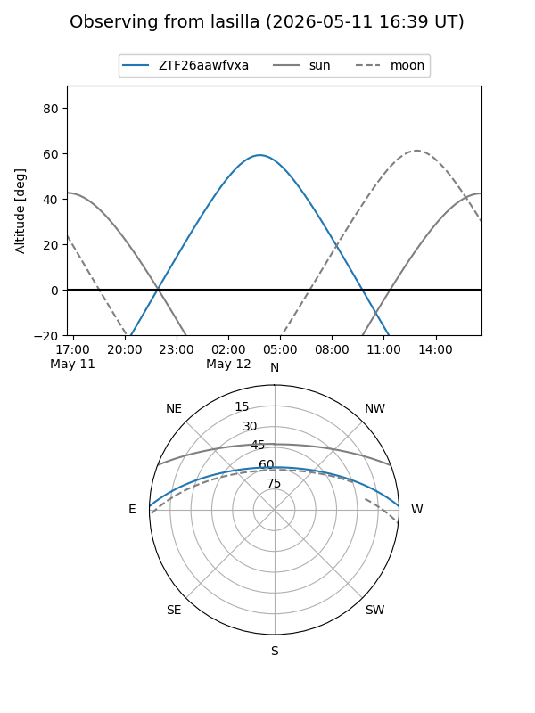
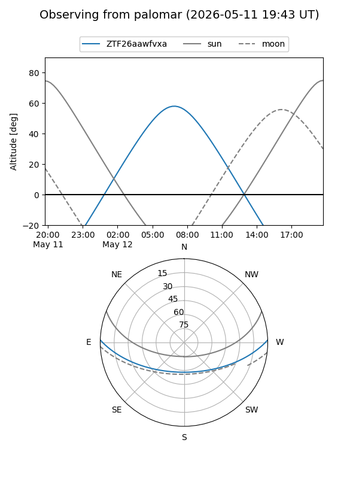

ZTF26aawfvxa
Target ZTF26aawfvxa at 2026-05-12 08:45
Aliases and brokers:
FINK: link
Lasair: link
ALeRCE: link
alt names
ZTF26aawfvxa (ztf,fink_ztf)
Coordinates:
equatorial (ra, dec) = 216.2265,+1.53185
equatorial (HMS+DMS) = 14:24:54.36,+01:31:54.67
galactic (l, b) = (348.0647,+55.98505)
Flags:
Photometry:
last ztfg=17.43
1 ztfg detections
Lightcurve
Visibility


Additional plots